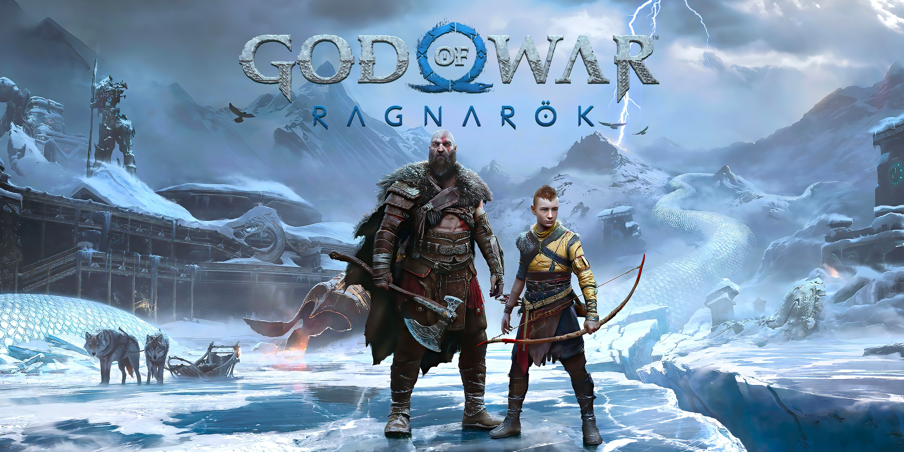
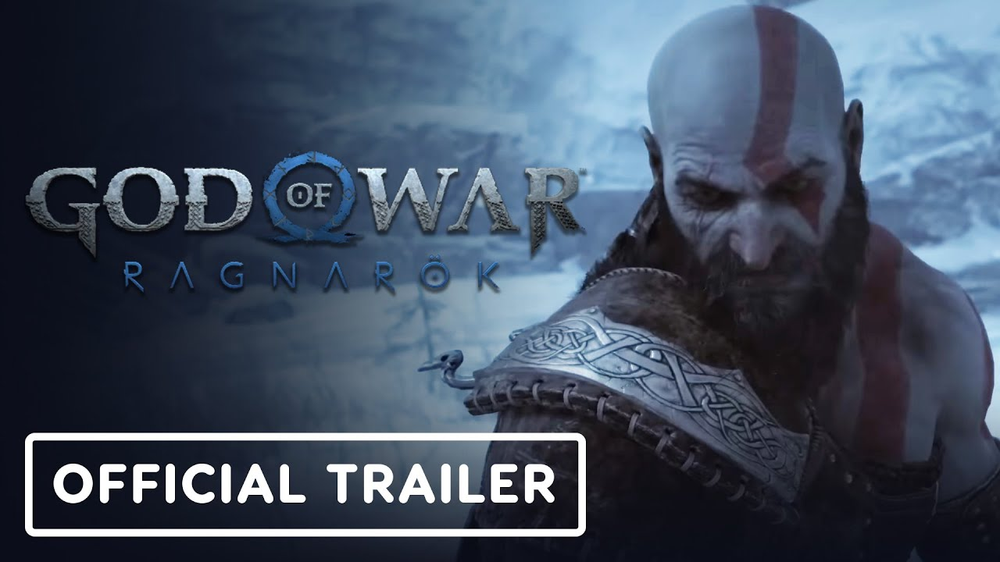
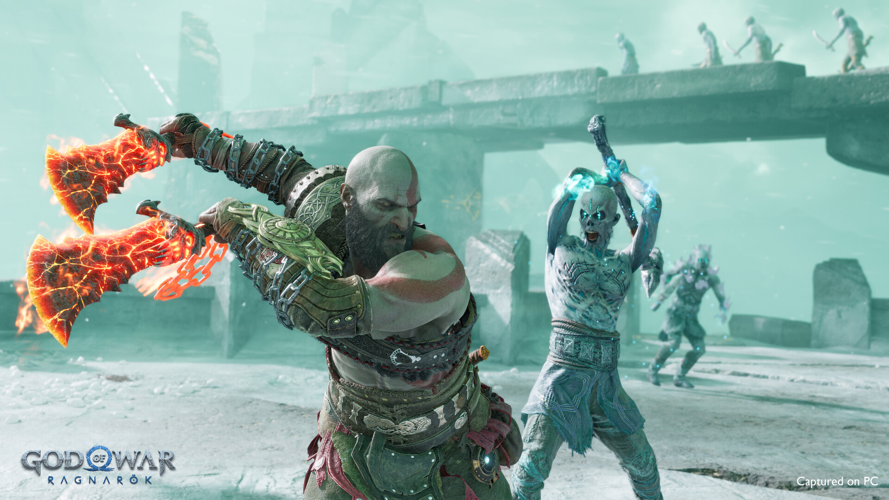
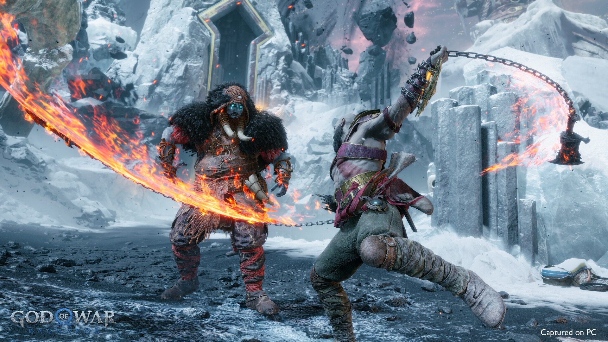
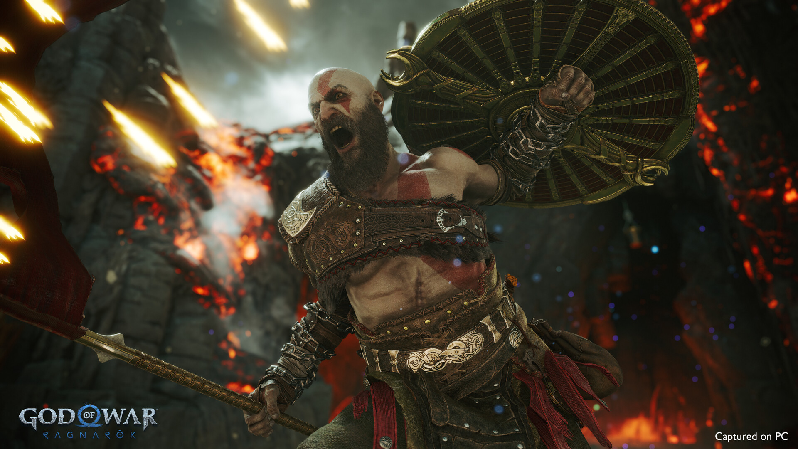
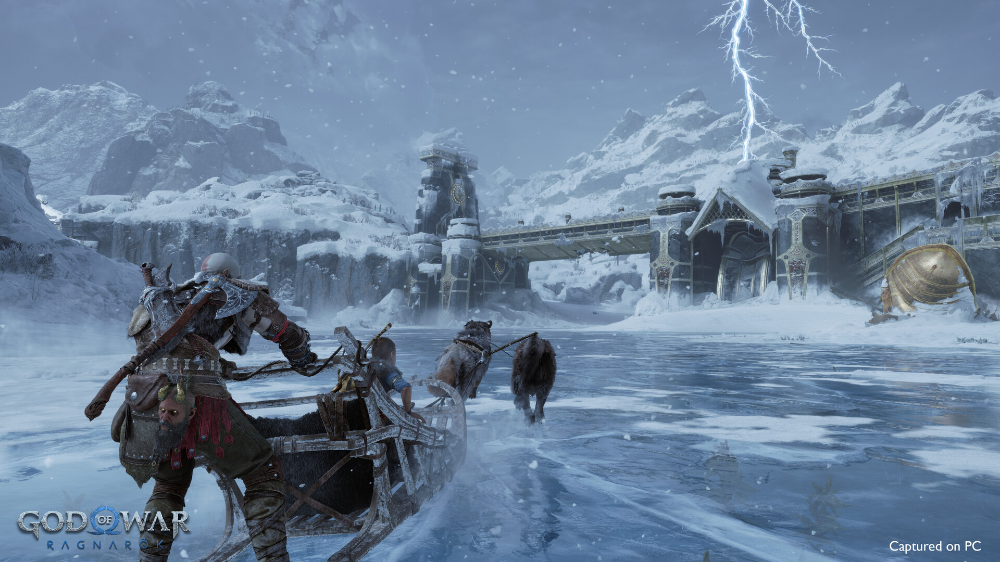
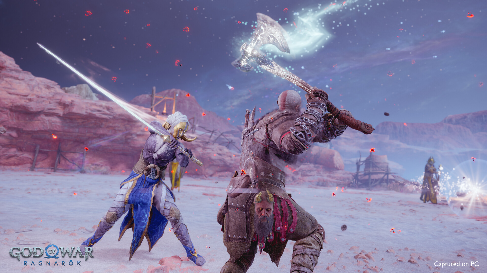
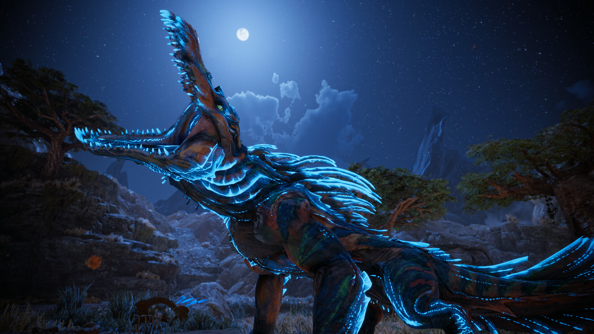
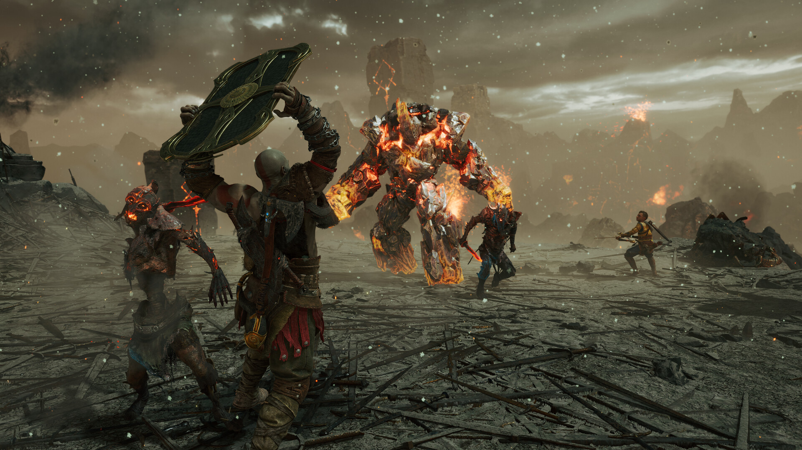

About God Of War Ragnarok
God of War Ragnarök is widely considered one of the most ambitious and emotionally powerful PlayStation exclusives ever released, serving as the epic continuation of Kratos and Atreus’ journey through Norse mythology. Developed by Santa Monica Studio and published by PlayStation , the game launched in November 2022 and quickly became praised for its cinematic storytelling, brutal combat, and massive world design. Ragnarök expands almost every aspect of the 2018 God of War formula, offering larger realms to explore, more enemy variety, deeper side quests, and significantly improved traversal mechanics that make exploration feel smoother and more rewarding. The story focuses heavily on the relationship between Kratos and Atreus as they prepare for the prophecy of Ragnarök, blending emotional character development with large-scale mythological conflict in a way that feels both personal and epic at the same time. Combat remains one of the game’s strongest features, with the Leviathan Axe, Blades of Chaos, and the new Draupnir Spear each providing unique playstyles and strategic depth, while enemy encounters feel more dynamic thanks to smarter AI and improved boss design. One of the most praised additions is the expanded companion system, which allows different characters to fight alongside the player throughout the journey, adding more variety to both gameplay and storytelling. Visually, Ragnarök is regarded as one of the best-looking games of its generation, featuring stunning environments, highly detailed character animations, cinematic camera work, and incredible environmental effects that make every realm feel alive and distinct. The soundtrack and voice performances, especially from Christopher Judge and Sunny Suljic, were also heavily praised for bringing emotional weight and authenticity to the narrative. The community response was overwhelmingly positive, with many players calling it a masterpiece due to its balance between emotional storytelling, satisfying gameplay, and blockbuster presentation, although some critics argued that the game played things too safely compared to the 2018 reboot. Despite minor criticism regarding pacing and puzzle repetition, God of War Ragnarök remains one of the most celebrated action-adventure games in recent years, winning multiple Game of the Year awards and further cementing the franchise’s legacy as one of gaming’s most iconic series.








| Component | Minimum | Recommended |
|---|---|---|
| OS version | Windows 10 64-bit | Windows 10 64-bit |
| CPU | Intel i5-4670k or AMD Ryzen 3 1200 | Intel i5-8600 or AMD Ryzen 5 3600 |
| Memory | 8 GB | 16 GB |
| GPU | NVIDIA GTX 1060 (6GB) or AMD RX 5500 XT (8GB) or Intel Arc A750 | NVIDIA RTX 2060 Super or AMD RX 5700 or Intel Arc A770 |
| DirectX | DirectX 12 | DirectX 12 |
| Storage | 190 GB | 190 GB |